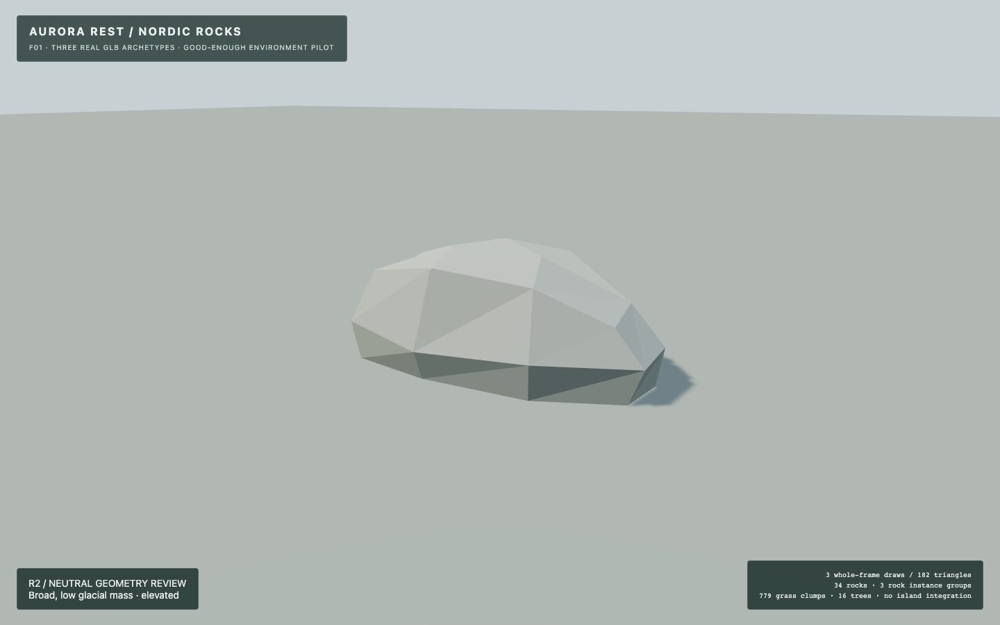
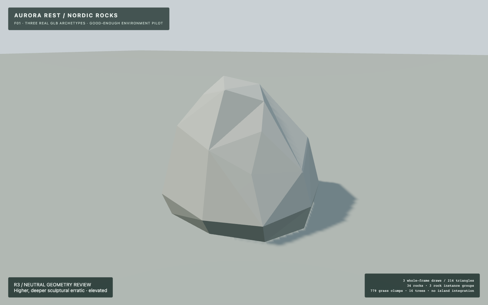
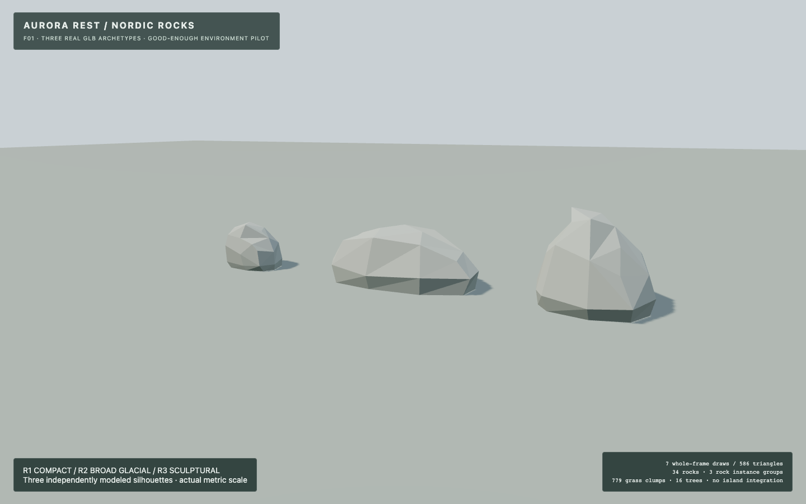
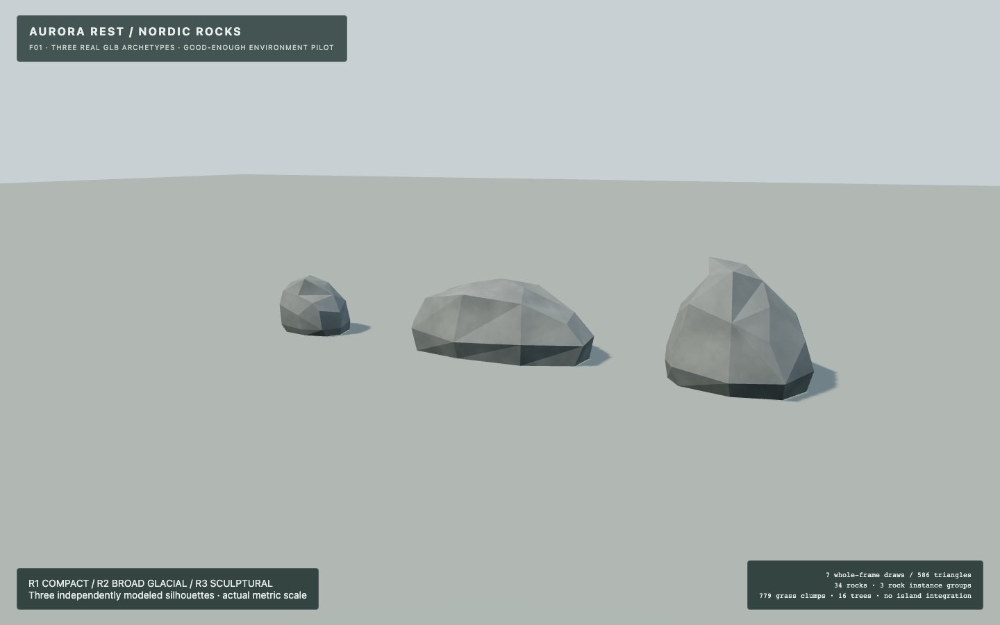
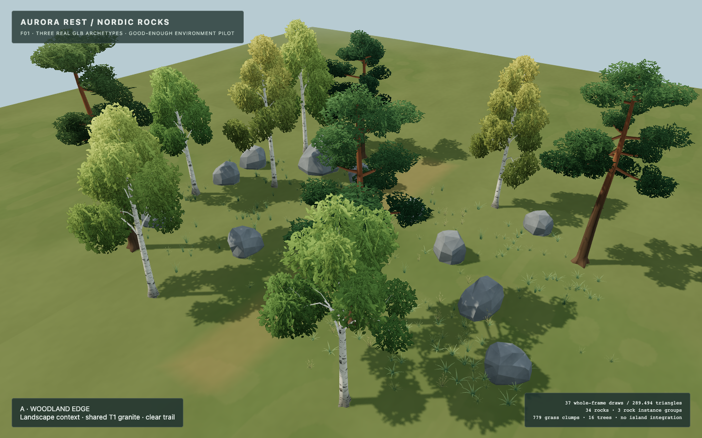
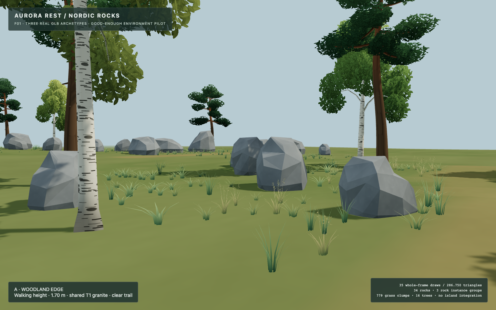
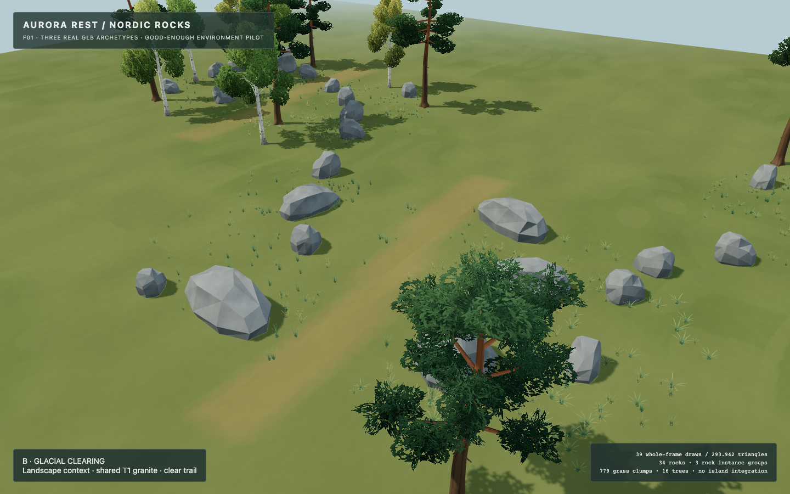
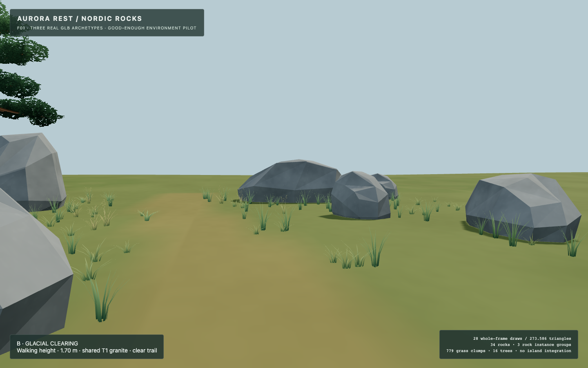
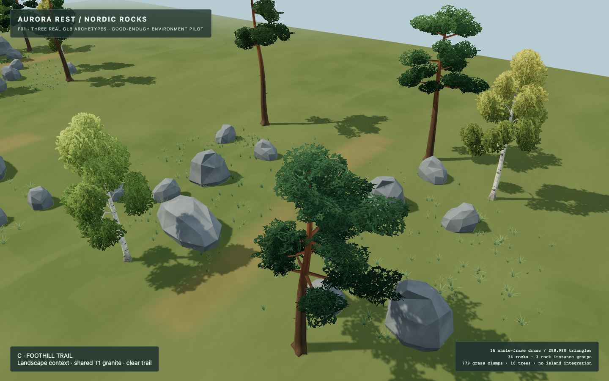
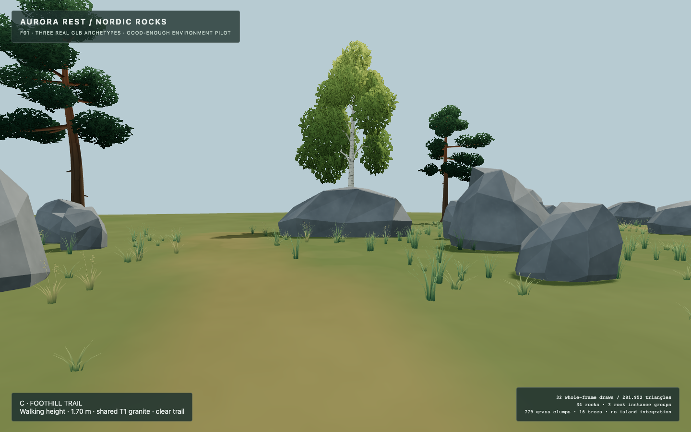
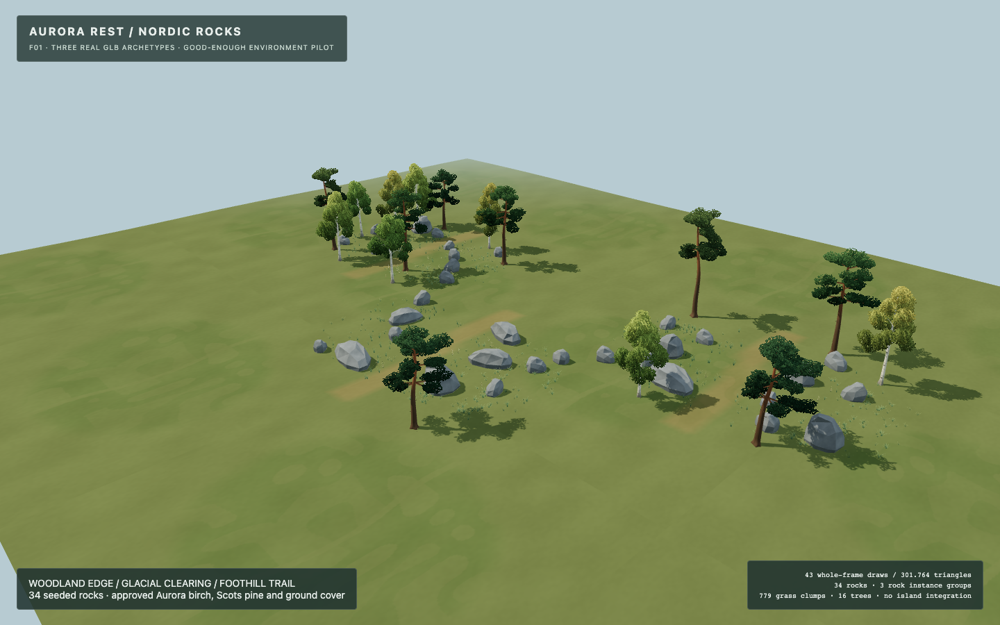

R2 and R3: ART NOT APPROVED. Geometry is frozen. The technical Blender → GLB → Three.js infrastructure is validated separately. No island integration, merge or deployment.
These are genuine Chromium/WebGL captures of the actual exported GLBs. Screenshot overlays retain the pilot's original working title and do not indicate art approval. The full raw capture set and eight neutral Blender views per new model are preserved.
Report · Technical handoff · Performance observations · Validation










